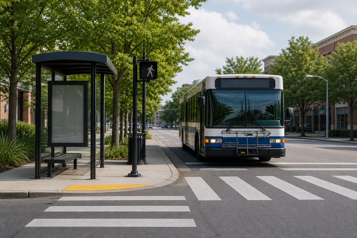

Practical Bench page with article text, navigation, links, nested inline markup, and light scripting.
Morning briefing

Local transit update preview image.
Updated 08:30 by the local desk
The council approved a transport plan after public comment. The page uses ordinary article structure, a few links, and several paragraphs to resemble a daily news visit.
Residents asked for better bus shelters, clearer pedestrian crossings, and more reliable evening service.
The image is a local JPEG asset for practical image decode and redraw coverage.
Market notes
Bench feed count: 3
Analysts tracked energy, logistics, and retail demand. Practical Bench content includes emphasis, anchors, and repeated text blocks.
Regional shipping remained steady.
Food prices moved within the expected range.
Local hiring reports were mixed.
Weather
Morning fog clears before noon. Winds stay light and the afternoon high remains comfortable.